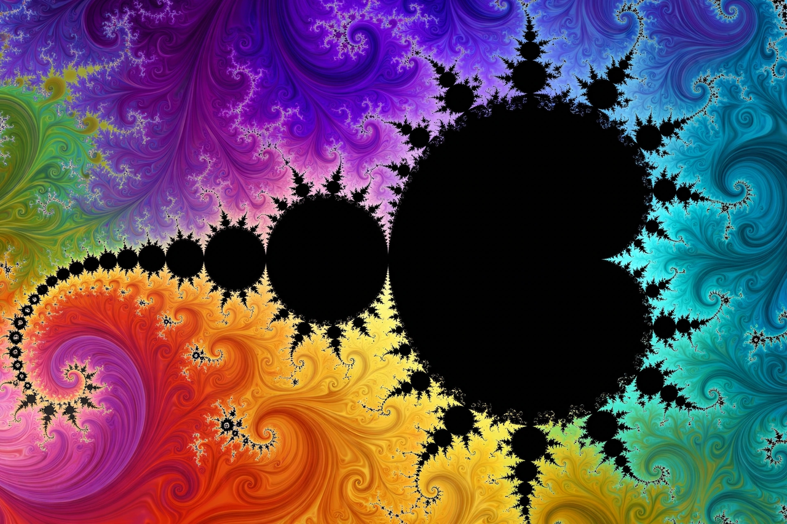

Fractal

[Image: The Mandelbrot set, with its infinitely detailed boundary]
A fractal is a geometric shape containing detailed structure at arbitrarily small scales, usually with a fractal dimension exceeding its topological dimension. Many fractals are self-similar: zooming in reveals copies of the whole.
The term was coined by Benoit Mandelbrot in 1975 (from the Latin fractus, broken), building on earlier work by mathematicians such as Koch, Sierpiński, and Julia. Famous examples include the Koch snowflake, the Sierpiński triangle, and the Mandelbrot set, defined by iterating z → z² + c in the complex plane.
Properties and dimension
The Hausdorff dimension quantifies a fractal's roughness: the Koch curve has dimension log 4 / log 3 ≈ 1.26. Fractals generated by iterated function systems, L-systems, and escape-time algorithms produce the intricate images popularised by computer graphics.
Natural objects — coastlines, clouds, river networks, blood vessels — show fractal-like scaling over a limited range, a theme of Mandelbrot's book The Fractal Geometry of Nature (1982).
Applications
Fractals are used in computer graphics and terrain generation, antenna design, image compression, signal processing, and the study of chaotic systems.